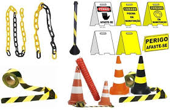
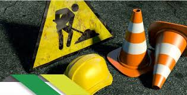

 
| A sigla EPC significa Equipamento de Proteção Coletiva. O EPC trata-se de todo dispositivo ou sistema de âmbito coletivo, destinado à preservação da integridade física e da saúde dos trabalhadores, assim como a de terceiros. |
Para que servem?
| Sua função é prevenir acidentes e doenças ocupacionais, bem como mitigar riscos no ambiente de trabalho. Isso significa que até sinalizações de perigo ou delimitação de áreas perigosas são considerados EPC. Consequentemente, o EPC também reduz os índices de problemas trabalhistas. |